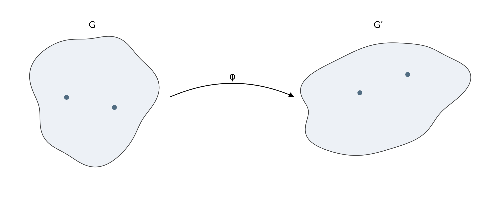
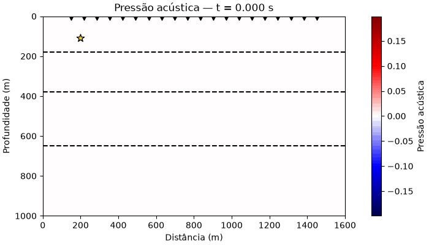

PIBIC - Tema 4
Ondas acústicas e elásticas
Modelo acústico e modelo elástico, pressão, deslocamento, parâmetros do meio e limitações
Atualizado em: 24/11/2026
1 Tensores
Seja \(V\) um espaço vetorial sobre um corpo \(\mathbb K\), e seja \(V^*\) seu espaço dual. Para \(r,s\in\mathbb N\), com \(r+s\neq 0\), um tensor do tipo \((r,s)\) sobre \(V\) é um funcional multilinear
\[ T: \underbrace{V^*\times\cdots\times V^*}_{r\text{ fatores}} \times \underbrace{V\times\cdots\times V}_{s\text{ fatores}} \longrightarrow \mathbb K. \]
O espaço vetorial constituído por todos os tensores desse tipo é denotado por
\[ T^r_s(V). \]
Mais geralmente, um campo tensorial do tipo \((r,s)\) é uma aplicação que associa a cada ponto \(\mathbf{x}\) de uma região \(E\) um tensor do tipo \((r,s)\) sobre \(V\). Quando consideramos também a dependência temporal, podemos escrever
\[ T:E\times I\longrightarrow T^r_s(V), \]
em que \(I\subseteq\mathbb R\) representa o intervalo de tempo considerado.
Nesse caso, para cada ponto \(\mathbf{x}\in E\) e instante \(t\in I\), temos um tensor
\[ T_{\mathbf{x},t}\in T^r_s(V). \]
Portanto, um campo tensorial associa um tensor a cada ponto da região considerada e a cada instante de tempo. Assim, os tensores que representam as grandezas físicas podem variar tanto espacialmente quanto temporalmente.
Neste trabalho, consideraremos \(E\subseteq\mathbb R^3\) como a região espacial na qual os campos estão definidos e adotaremos \(V=\mathbb R^3\) como espaço vetorial. Dessa forma, os tensores associados a cada ponto \(\mathbf{x}\in E\) e instante \(t\in I\) pertencem a \(T^r_s(\mathbb R^3)\).
2 Modelo elástico
Diz-se que um meio é elástico se ele possui um estado natural no qual deformações e tensões são nulas, ao qual retorna quando as forças aplicadas são removidas. Sob a ação de cargas aplicadas, tensão e deformação variam em conjunto, e a relação entre elas, chamada relação constitutiva, é uma característica importante do meio.
2.1 Tensor de deformação
Considere uma região \(G\subset\mathbb{R}^3\) e \(G'\), essa região após uma deformação elástica. Consideramos duas partículas em \(G\), em que uma está na posição \(\mathbf{x}\) e a outra em \(\mathbf{x}+\delta\mathbf{x}\). Após sofrerem a deformação, elas vão para \(\mathbf{x}+\mathbf{u}(\mathbf{x})\) e \(\mathbf{x}+\delta\mathbf{x}+\mathbf{u}(\mathbf{x}+\delta\mathbf{x})\), respectivamente. Em \(G\), \(\delta\mathbf{x}\) é o vetor que liga as duas partículas. Queremos saber o que acontece com \(\delta\mathbf{x}\) após sofrer a transformação. Tomando que o vetor novo é dado por \(\delta\mathbf{x}+\delta\mathbf{u}=\text{posição final}-\text{posição inicial}\), temos que
\[ \delta\mathbf{u}=\mathbf{u}(\mathbf{x}+\delta\mathbf{x})-\mathbf{u}(\mathbf{x}). \]
Considerando pequenas deformações, expandimos \(\mathbf{u}(\mathbf{x}+\delta\mathbf{x})\) em série de Taylor:
\[ \mathbf u(\mathbf x+\delta\mathbf x) = \mathbf u(\mathbf x) + (\delta\mathbf x\cdot\nabla)\mathbf u + O(\|\delta\mathbf x\|^2), \]
de modo que
\[ \delta\mathbf u = (\delta\mathbf x\cdot\nabla)\mathbf u + O(\|\delta\mathbf x\|^2). \]
Em primeira ordem, temos:
\[ \delta u_i = \partial_j u_i\,\delta x_j. \]
Seja \(A\) o operador linear cuja matriz, em uma base ortonormal, tem componentes \(A_{ij}=\partial_j u_i\), de modo que \(\delta\mathbf u=A\,\delta\mathbf x\). É possível decompor esse operador em uma parte simétrica e uma antissimétrica usando um operador autoadjunto e um antiadjunto, pois \(\mathbb{R}^3\) é um espaço de Hilbert. Decompondo, obtemos \(L=\frac12(A+A^*)+\frac12(A-A^*)\). Para o caso de \(\mathbb{R}^3\) com bases ortonormais, temos:
\[ \delta u_i = \frac12(\partial_j u_i+\partial_i u_j)\,\delta x_j + \frac12(\partial_j u_i-\partial_i u_j)\,\delta x_j. \]
É possível mostrar que a parte antissimétrica está relacionada com rotações, não afetando as deformações; podemos, portanto, desconsiderá-la. Escrevendo apenas a parte simétrica, obtemos e definimos:
\[ \epsilon_{ij}=\frac12\left(\partial_j u_i+\partial_i u_j\right) \tag{1}\]
como tensor de deformação.
2.2 Tensor de tensões
Queremos estudar como as trações atuam em superfícies. Primeiro, podemos considerar que, pela terceira lei de Newton, as trações atuam em pares, \(\mathbf{t}(-\mathbf{n})=-\mathbf{t}(\mathbf{n})\). A partir disso, podemos utilizar o resultado do tetraedro de Cauchy para descrever as trações em uma superfície por meio de vetores normais e do tensor de tensões \(\sigma_{ij}\), obtendo \(t^n_i=\sigma_{ij}n_j\).
2.3 Lei de Hooke generalizada
Podemos relacionar o tensor de deformação e o tensor de tensões utilizando um outro tensor, da seguinte forma
\[ \sigma_{ij}=c_{ijkl}\,\epsilon_{kl}, \tag{2}\]
em que \(c_{ijkl}\) denota um tensor de ordem 4 que pode ser representado por uma aplicação \(T^0_2(V)\to T^0_2(V)\). Com isso, obtemos uma expressão para o tensor das tensões. Devido às simetrias de \(\sigma_{ij}\) e \(\epsilon_{kl}\), o tensor \(c_{ijkl}\) satisfaz \(c_{ijkl}=c_{jikl}=c_{ijlk}\). Para um meio isotrópico, podemos reduzir as componentes independentes desse tensor e obter uma nova expressão que representa as mesmas propriedades físicas em qualquer base escolhida:
\[ c_{ijkl} = \lambda\, \delta_{ij}\delta_{kl} + \mu\left( \delta_{ik}\delta_{jl} + \delta_{il}\delta_{jk} \right). \tag{3}\]
Substituindo a Equação 3 na Equação 2, obtemos
\[ \sigma_{ij} = \lambda\, \epsilon_{kk}\, \delta_{ij} + 2\mu\, \epsilon_{ij}. \tag{4}\]
2.4 Equação de movimento
Considere um elemento infinitesimal de volume \(\mathrm{d}V\) em um sistema de coordenadas cartesiano definido pela base gerada por \(\mathbf{e}_1\), \(\mathbf{e}_2\) e \(\mathbf{e}_3\).
Nesse elemento existem duas forças atuando: forças de corpo e forças de contato. As forças de contato são definidas pela tração \(\mathbf{t}^n\) atuando em toda a superfície \(S\) que envolve o elemento, enquanto as forças de corpo \(\mathbf{f}\) são forças intrínsecas ao elemento \(\mathrm{d}V\), associadas à sua massa.
Sendo assim, é possível aplicar a segunda lei de Newton a esse elemento. Sabendo que a densidade é dada por
\[ \rho = \frac{\mathrm{d}m}{\mathrm{d}V}, \]
a equação do movimento pode ser escrita na forma integral como
\[ \int_V \rho \, \partial_t^2 \mathbf{u} \, \mathrm{d}V = \int_S \mathbf{t}^n \, \mathrm{d}S + \int_V \mathbf{f} \, \mathrm{d}V, \tag{5}\]
em que \(\mathbf{u}\) é o vetor deslocamento, \(\mathbf{t}^n\) é o vetor de tração na superfície de normal \(\mathbf{n}\) e \(\mathbf{f}\) é a força de corpo por unidade de volume. Pelo resultado do tetraedro de Cauchy,
\[ t^n_i = \sigma_{ij}\, n_j, \qquad\text{ou, em notação vetorial,}\qquad \mathbf{t}^n = \boldsymbol{\sigma} \cdot \mathbf{n}. \tag{6}\]
Substituindo a Equação 6 na integral de superfície da Equação 5, obtemos
\[ \int_V \rho \, \partial_t^2 \mathbf{u} \, \mathrm{d}V = \int_S \boldsymbol{\sigma} \cdot \mathbf{n} \, \mathrm{d}S + \int_V \mathbf{f} \, \mathrm{d}V. \tag{7}\]
Aplicando o teorema da divergência à integral de superfície, é possível converter a Equação 7 em uma equação puramente de volume:
\[ \int_V \left( \rho \, \partial_t^2 \mathbf{u} - \nabla \cdot \boldsymbol{\sigma} - \mathbf{f} \right) \mathrm{d}V = 0. \]
Como o volume \(V\) é arbitrário, o integrando deve se anular em todo ponto do meio, o que fornece a forma diferencial:
\[ \rho \, \partial_t^2 \mathbf{u} = \nabla \cdot \boldsymbol{\sigma} + \mathbf{f}, \qquad\text{ou, em notação indicial,}\qquad \rho \, \partial_t^2 u_i = \partial_j \sigma_{ij} + f_i. \tag{8}\]
Essa relação é válida tanto para o modelo elástico quanto para o modelo acústico, diferindo apenas na forma do tensor de tensões \(\boldsymbol{\sigma}\) em função das propriedades do meio. Reunindo os resultados anteriores, o problema elastodinâmico é descrito pelo seguinte sistema de equações acopladas: a equação de movimento, incluindo um termo de fonte \(M_{ij}\), associado, por exemplo, a um tensor de momento sísmico,
\[ \rho\, \partial_t^2 u_i = \partial_j\left(\sigma_{ij} + M_{ij}\right) + f_i, \tag{9}\]
o tensor de tensões para meios isotrópicos,
\[ \sigma_{ij} = \lambda\, \epsilon_{kk}\, \delta_{ij} + 2\mu\, \epsilon_{ij}, \tag{10}\]
e o tensor de deformação,
\[ \epsilon_{kl} = \frac{1}{2}\left(\partial_k u_l + \partial_l u_k\right). \tag{11}\]
Calculando a divergência do tensor de tensões (Equação 10), para \(\lambda\) e \(\mu\) constantes, temos
\[ \partial_j \sigma_{ij} = \lambda\, \partial_i(\partial_k u_k) + \mu\, \partial_j(\partial_i u_j + \partial_j u_i) = (\lambda + \mu)\, \partial_i(\partial_k u_k) + \mu\, \partial_j \partial_j u_i. \]
Substituindo esse resultado na Equação 9, obtemos
Escrevendo explicitamente cada uma das três componentes:
Usando as definições
\[ \nabla \cdot \mathbf{u} \equiv \partial_1 u_1 + \partial_2 u_2 + \partial_3 u_3, \qquad \nabla^2 u_i \equiv \partial_1^2 u_i + \partial_2^2 u_i + \partial_3^2 u_i, \]
a Equação 13 se torna
Essa relação descreve simultaneamente a propagação das ondas P e S em um meio isotrópico caracterizado pelos parâmetros \(\rho\), \(\lambda\) e \(\mu\). No entanto, por acoplar as três componentes de \(\mathbf{u}\) através dos termos \(\nabla(\nabla\cdot\mathbf{u})\) e \(\nabla^2\mathbf{u}\), essa forma não separa explicitamente os dois tipos de onda.
2.5 Teorema de Helmholtz
O teorema de Helmholtz estabelece que qualquer campo vetorial suficientemente regular \(\mathbf{u}(\mathbf{x}, t)\) pode ser decomposto de forma única na soma de uma parte irrotacional e uma parte solenoidal:
\[ \mathbf{u} = \nabla \phi + \nabla \times \boldsymbol{\Psi}, \tag{15}\]
em que \(\phi\) é um potencial escalar e \(\boldsymbol{\Psi}\) é um potencial vetorial, sujeito à condição \(\nabla \cdot \boldsymbol{\Psi} = 0\).
3 Modelo acústico
O modelo acústico é construído com a hipótese de um meio de propagação fluido, ou seja, com \(\mu=0\). Para um fluido, a pressão é dada por \(P=-\mathbf{n}\cdot\mathbf{t}^n\). Utilizando
\[ t^n_i=\sigma_{ij}n_j, \]
obtemos
\[ P=-n_i\sigma_{ij}n_j. \]
Considerando fluidos isotrópicos, o que exige que a pressão seja a mesma para todo \(\mathbf{n}\), temos \(\sigma_{ij}=-P\delta_{ij}\). Usando o tensor de tensões para meios isotrópicos com \(\mu=0\), chegamos à relação
\[ P=-K\,\nabla\cdot\mathbf u, \tag{18}\]
em que \(K\) é o módulo de compressibilidade (Seção 5).
Partimos da equação de movimento, Equação 8, sem forças de corpo, e utilizando a relação \(\sigma_{ij}=-P\delta_{ij}\), obtemos
\[ \rho(\mathbf{x})\,\partial_t^2\mathbf{u} = -\nabla P. \tag{19}\]
Utilizamos também a Equação 18 com \(K=K(\mathbf{x})\):
\[ P=-K(\mathbf{x})\,\nabla\cdot\mathbf{u}. \]
Derivando a Equação 18 duas vezes em relação ao tempo:
\[ \partial_t^2 P = -K(\mathbf{x})\, \partial_t^2\left(\nabla\cdot\mathbf{u}\right). \]
Como \(K\) depende somente da posição, podemos mantê-lo fora da derivada temporal. Além disso, para campos suficientemente regulares, podemos comutar as derivadas espaciais e temporais. Assim,
\[ \partial_t^2 P = -K(\mathbf{x})\,\nabla\cdot \left( \partial_t^2\mathbf{u} \right). \tag{20}\]
Eliminando o campo de deslocamento
Agora, isolamos a aceleração na Equação 19:
\[ \partial_t^2\mathbf{u} = -\frac{1}{\rho(\mathbf{x})}\nabla P. \tag{21}\]
Substituindo a Equação 21 na Equação 20:
\[ \partial_t^2 P = -K(\mathbf{x})\,\nabla\cdot \left( -\frac{1}{\rho(\mathbf{x})}\nabla P \right). \]
Pela linearidade do operador divergente:
\[ \partial_t^2 P = K(\mathbf{x})\,\nabla\cdot \left( \frac{1}{\rho(\mathbf{x})}\nabla P \right), \]
Caso particular: meio homogêneo
Para um meio homogêneo, consideramos a densidade e o módulo de compressibilidade constantes. Dessa forma, podemos escrever:
\[ \frac{1}{K}\,\partial_t^2 P - \frac{1}{\rho}\nabla^2P =0. \]
\[ \partial_t^2 P - \frac{K}{\rho}\nabla^2P =0. \]
Definindo a velocidade de propagação acústica como
\[ c_a^2=\frac{K}{\rho}, \]
obtemos a equação clássica da onda acústica:
\[ \partial_t^2 P -c_a^2\nabla^2P=0. \tag{22}\]
Essa é a equação que descreve o modelo acústico, podendo ser obtida diretamente do teorema de Helmholtz. Essa equação não admite a presença de ondas S, pois \(\mu=0\); não há tensão de cisalhamento e \(K=\lambda\) nesse caso. Diferentemente do modelo elástico, as soluções dessa EDP podem ser obtidas na forma da simples separação de variáveis para a ausência de fontes e via funções de Green para a presença de fontes.

4 Pressão e deslocamento
A pressão pode ser obtida através do deslocamento, sendo uma grandeza escalar utilizada para descrever o modelo acústico; o deslocamento é uma grandeza vetorial usada para descrever o modelo elastico:
\[ P=P(\mathbf{x},t), \qquad \mathbf{u}=\big(u_1(\mathbf{x},t),u_2(\mathbf{x},t),u_3(\mathbf{x},t)\big), \qquad \mathbf{x}=(x_1,x_2,x_3). \]
5 Parâmetros do meio
A propagação das ondas sísmicas depende das propriedades físicas e elásticas do meio. Para um sólido elástico, linear e isotrópico, o comportamento mecânico pode ser descrito pela densidade \(\rho\) e por dois parâmetros elásticos independentes, usualmente escolhidos como os parâmetros de Lamé \(\lambda\) e \(\mu\). Esses parâmetros, juntamente com a densidade, determinam as velocidades de propagação das ondas.
5.1 Densidade
A densidade representa a massa por unidade de volume e é definida por
\[ \rho = \frac{\mathrm{d}m}{\mathrm{d}V}. \]
Sua unidade no Sistema Internacional é
\[ [\rho] = \mathrm{kg/m^3}. \]
5.2 Parâmetros de Lamé
Em um meio elástico, linear e isotrópico, a relação entre tensão e deformação pode ser escrita como
\[ \sigma_{ij} = \lambda\epsilon_{kk}\delta_{ij} + 2\mu\epsilon_{ij}. \]
Os coeficientes \(\lambda\) e \(\mu\) são denominados parâmetros de Lamé. O parâmetro \(\mu\) é também denominado módulo de cisalhamento ou módulo de rigidez. Ele representa a resistência do material à deformação por cisalhamento. Já \(\lambda\) está associado à resposta do material à deformação volumétrica.
Os parâmetros \(\lambda\) e \(\mu\) possuem dimensão de tensão:
\[ [\lambda] = [\mu] = \mathrm{Pa}. \]
5.3 Módulo de compressibilidade
Um parâmetro frequentemente utilizado para caracterizar a resistência do material à compressão volumétrica é o módulo de compressibilidade,
\[ K = \lambda + \frac{2}{3}\mu. \tag{23}\]
Sua unidade no Sistema Internacional é o Pascal:
\[ [K] = \mathrm{Pa}. \]
5.4 Velocidades das ondas P e S
As propriedades elásticas e a densidade determinam as velocidades das ondas sísmicas em um meio isotrópico.
A velocidade da onda P é
\[ V_P = \sqrt{ \frac{\lambda+2\mu}{\rho} }. \]
Utilizando a Equação 23, a expressão pode ser escrita como
\[ V_P = \sqrt{ \frac{K+\frac{4}{3}\mu}{\rho} }. \]
A velocidade da onda S é
\[ V_S = \sqrt{ \frac{\mu}{\rho} }. \]
Portanto, a velocidade da onda P depende da densidade, da resistência à compressão e da resistência ao cisalhamento, enquanto a velocidade da onda S depende diretamente do módulo de cisalhamento e da densidade:
\[ V_P = V_P(\lambda,\mu,\rho) \qquad\text{e}\qquad V_S = V_S(\mu,\rho). \]
A ausência de rigidez ao cisalhamento em um meio implica
\[ \mu=0, \]
e, consequentemente,
\[ V_S=0. \]
5.5 Parâmetros do modelo acústico
No modelo acústico, considera-se que o meio não apresenta resistência ao cisalhamento. Assim,
\[ \mu=0. \]
Nesse caso,
\[ K=\lambda \]
e a velocidade da onda compressional torna-se
\[ c_a = \sqrt{\frac{K}{\rho}} = \sqrt{\frac{\lambda}{\rho}}. \]
5.6 Meios homogêneos e heterogêneos
Os parâmetros físicos e elásticos podem ser constantes ou variar espacialmente.
Para um meio homogêneo,
\[ \rho(\mathbf{x})=\rho_0, \qquad \lambda(\mathbf{x})=\lambda_0, \qquad \mu(\mathbf{x})=\mu_0. \]
Nesse caso, as propriedades do meio são independentes da posição.
Em um meio heterogêneo, esses parâmetros variam espacialmente:
\[ \rho=\rho(\mathbf{x}), \qquad \lambda=\lambda(\mathbf{x}), \qquad \mu=\mu(\mathbf{x}). \]
Consequentemente, as velocidades das ondas também variam no espaço:
\[ V_P(\mathbf{x}) = \sqrt{ \frac{ \lambda(\mathbf{x}) + 2\mu(\mathbf{x}) } {\rho(\mathbf{x})} }, \]
\[ V_S(\mathbf{x}) = \sqrt{ \frac{ \mu(\mathbf{x}) } {\rho(\mathbf{x})} }. \]
Para o modelo acústico,
\[ c_a(\mathbf{x}) = \sqrt{ \frac{K(\mathbf{x})} {\rho(\mathbf{x})} }. \]
6 Limitações
Os modelos elástico e acústico descritos acima são idealizações da propagação de ondas na Terra. Cada um deles se apoia em hipóteses que delimitam a sua validade.
6.1 Limitações do modelo elástico
Elasticidade perfeita. O modelo supõe que o meio retorna ao estado natural sem perda de energia.
Isotropia. A relação constitutiva isotrópica depende apenas de dois parâmetros, \(\lambda\) e \(\mu\). Rochas laminadas, folhelhos e meios fraturados são anisotrópicos: as velocidades dependem da direção de propagação e o tensor \(c_{ijkl}\) possui mais componentes independentes.
Linearidade e pequenas deformações. O tensor \(\epsilon_{ij}\) e a relação constitutiva linear valem para deformações infinitesimais. Perto da fonte, ou para grandes amplitudes, o comportamento é não linear.
6.2 Limitações do modelo acústico
Contraste fluido–sólido. A Terra é predominantemente sólida.
Ausência de ondas S e de conversão P–S. Como \(\mu=0\), o modelo não admite ondas S, nem a conversão de modo na interface entre camadas.
Referências
Aki, K.; Richards, P. G. Quantitative Seismology. 2.a ed. Sausalito, CA: University Science Books, 2002.
Igel, H. Computational Seismology: A Practical Introduction. Oxford: Oxford University Press, 2017.
Riley, K. F.; Hobson, M. P.; Bence, S. J. Mathematical Methods for Physics and Engineering. 7.a ed. Cambridge: Cambridge University Press.
Axler, S. Linear Algebra Done Right. 4.a ed. Cham: Springer,
Mund, J. Tensores – Álgebra e Análise. Notas de Aula, Física Matemática II. Departamento de Física, Universidade Federal de Juiz de Fora (UFJF), 2020.
Mostrar código
from pathlib import Path
import numpy as np
import matplotlib.pyplot as plt
from matplotlib.animation import FuncAnimation, PillowWriter
from IPython.display import display, Image
OUT = Path('resultados_acustica_elastica')
OUT.mkdir(exist_ok=True)
DX = DZ = 10.0
NX, NZ = 161, 101
DT, NT = 0.0008, 1550
F0, T0 = 10.0, 0.14
SRC_X, SRC_Z = 200.0, 110.0
REC_X = np.linspace(150, 1450, 20)
REC_Z = 10.0
BOUNDARIES = [0, 180, 380, 650, 1010]
VP_LAY = np.array([1500., 1900., 2400., 3000.])
VS_LAY = np.array([650., 950., 1300., 1700.])
RHO_LAY = np.array([1800., 2000., 2200., 2450.])
x = np.arange(NX)*DX
z = np.arange(NZ)*DZ
layer = np.searchsorted(BOUNDARIES[1:-1], z, side='right')
vp = np.repeat(VP_LAY[layer,None], NX, axis=1)
vs = np.repeat(VS_LAY[layer,None], NX, axis=1)
rho = np.repeat(RHO_LAY[layer,None], NX, axis=1)
mu = rho*vs**2
lam = rho*(vp**2 - 2*vs**2)
K = rho*vp**2 # módulo acústico efetivo; não é o bulk elástico 3D
bulk_elastic = lam + 2*mu/3
ixs, izs = int(round(SRC_X/DX)), int(round(SRC_Z/DZ))
ixr = np.rint(REC_X/DX).astype(int)
izr = int(round(REC_Z/DZ))
def ricker(t):
a = np.pi*F0*(t-T0)
return (1-2*a*a)*np.exp(-a*a)
# Para FD 2ª ordem, avaliar pontos por menor comprimento de onda no conteúdo útil.
f_eff = 2.5*F0
print(f'Courant acústico 2D: {vp.max()*DT*np.sqrt(1/DX**2+1/DZ**2):.3f}')Mostrar código
print(f'Pontos/λ_min(P) em 2.5 f0: {vp.min()/(f_eff*DX):.1f}')Mostrar código
print(f'Pontos/λ_min(S) em 2.5 f0: {vs.min()/(f_eff*DX):.1f}')Mostrar código
assert vp.max()*DT*np.sqrt(1/DX**2+1/DZ**2) < 1
fig, axs = plt.subplots(1,3,figsize=(15,4.6),sharex=True,sharey=True,constrained_layout=True)
for ax, data, label in zip(axs,[vp,vs,rho],['Vp (m/s)','Vs (m/s)','Densidade (kg/m³)']):
im=ax.imshow(data,extent=[0,x[-1],z[-1],0],aspect='auto',cmap='viridis')
for zz in BOUNDARIES[1:-1]: ax.axhline(zz,color='black',ls='-',lw=1)
ax.plot(SRC_X,SRC_Z,'r*',ms=12)
ax.plot(REC_X,np.full_like(REC_X,REC_Z),'kv',ms=4)
ax.set(xlabel='Distância x (m)',title=label)
fig.colorbar(im,ax=ax,shrink=.8)Mostrar código
axs[0].set_ylabel('Profundidade z (m)')
fig.suptitle('Quatro camadas | estrela = fonte | triângulos = 20 receptores')
fig.savefig(OUT/'01_modelo_geologico.png',dpi=150)
for j in range(4):
print(f'Camada {j+1}: {BOUNDARIES[j]:3d}–{min(BOUNDARIES[j+1],1000):4d} m | Vp={VP_LAY[j]:4.0f} | Vs={VS_LAY[j]:4.0f} m/s | rho={RHO_LAY[j]:4.0f} kg/m³')Mostrar código
def make_sponge(width=17, strength=0.032):
# Absorção na base, esquerda e direita; NÃO é superfície livre.
dist_x=np.minimum(np.arange(NX),np.arange(NX)[::-1])
#dist_z=np.minimum(np.arange(NZ),np.arange(NZ)[::-1])
dist_z=np.arange(NZ)[::-1] # SEM amortecimento no topo
dd=np.minimum(dist_z[:,None],dist_x[None,:])
return np.exp(-strength*np.maximum(0,width-dd)**2/width)
#def sponge(width=18,strength=.035):
# dx_edge=np.minimum(np.arange(NX),np.arange(NX)[::-1])
# dz_bottom=np.arange(NZ)[::-1] # SEM amortecimento no topo
# distance=np.minimum(dz_bottom[:,None],dx_edge[None,:])
# return np.exp(-strength*np.maximum(0,width-distance)**2/width)
#damp=sponge()
sponge = make_sponge()
# Fatores e densidades nas faces
s_x = np.pad(sponge,((0,0),(0,1)),mode='edge')
s_z = np.pad(sponge,((0,1),(0,0)),mode='edge')
s_c = np.pad(sponge,((0,1),(0,1)),mode='edge')
rho_x=np.pad((rho[:,:-1]+rho[:,1:])/2,((0,0),(1,1)),mode='edge')
rho_z=np.pad((rho[:-1,:]+rho[1:,:])/2,((1,1),(0,0)),mode='edge')
# Módulo de cisalhamento nos cantos (média harmônica)
mu_corner=np.pad(4/(1/mu[:-1,:-1]+1/mu[1:,:-1]+1/mu[:-1,1:]+1/mu[1:,1:]),((1,1),(1,1)),mode='edge')
plt.figure(figsize=(8,3.5))
plt.imshow(sponge,extent=[0,x[-1],z[-1],0],aspect='auto',vmin=0,vmax=1,cmap='viridis')
plt.title('Fator de amortecimento por passo (sponge nas bordas)')
plt.xlabel('Distância x (m)');plt.ylabel('Profundidade z (m)')
plt.colorbar(label='Multiplicador');
def simulate_acoustic(snapshot_every=24):
p=np.zeros((NZ,NX)); vx=np.zeros((NZ,NX+1)); vz=np.zeros((NZ+1,NX))
seis_p=np.zeros((NT,len(ixr)))
seis_vz=np.zeros_like(seis_p)
snaps=[]
for it in range(NT):
vx[:,1:-1] -= DT/rho_x[:,1:-1]*(p[:,1:]-p[:,:-1])/DX
vz[1:-1,:] -= DT/rho_z[1:-1,:]*(p[1:,:]-p[:-1,:])/DZ
vx*=s_x; vz*=s_z
div=(vx[:,1:]-vx[:,:-1])/DX+(vz[1:,:]-vz[:-1,:])/DZ
p -= DT*K*div
p[izs,ixs] += ricker(it*DT)
p*=sponge
seis_p[it]=p[izr,ixr]
seis_vz[it]=0.5*(vz[izr,ixr]+vz[izr+1,ixr])
if it%snapshot_every==0: snaps.append((it*DT,p.copy()))
return {'p':seis_p,'vz':seis_vz,'snapshots':snaps}
acoustic=simulate_acoustic()
print('Simulação acústica concluída:', acoustic['p'].shape)Mostrar código
def simulate_elastic(snapshot_every=24):
vx=np.zeros((NZ,NX+1)); vz=np.zeros((NZ+1,NX))
sxx=np.zeros((NZ,NX)); szz=np.zeros((NZ,NX)); sxz=np.zeros((NZ+1,NX+1))
seis_vz=np.zeros((NT,len(ixr)))
seis_vx=np.zeros_like(seis_vz)
seis_smean=np.zeros_like(seis_vz)
snaps=[]
for it in range(NT):
# Divergência de tensões nas faces (componentes de velocidade)
vx[:,1:-1] += DT/rho_x[:,1:-1]*(
(sxx[:,1:]-sxx[:,:-1])/DX
+(sxz[1:,1:-1]-sxz[:-1,1:-1])/DZ)
vz[1:-1,:] += DT/rho_z[1:-1,:]*(
(sxz[1:-1,1:]-sxz[1:-1,:-1])/DX
+(szz[1:,:]-szz[:-1,:])/DZ)
vx*=s_x; vz*=s_z
exx=(vx[:,1:]-vx[:,:-1])/DX
ezz=(vz[1:,:]-vz[:-1,:])/DZ
sxx += DT*((lam+2*mu)*exx+lam*ezz)
szz += DT*(lam*exx+(lam+2*mu)*ezz)
sxz[1:-1,1:-1] += DT*mu_corner[1:-1,1:-1]*(
(vx[1:,1:-1]-vx[:-1,1:-1])/DZ
+(vz[1:-1,1:]-vz[1:-1,:-1])/DX)
# Fonte explosiva isotrópica, sinal oposto à pressão positiva
sxx[izs,ixs] -= ricker(it*DT)
szz[izs,ixs] -= ricker(it*DT)
sxx*=sponge; szz*=sponge; sxz*=s_c
seis_vz[it]=0.5*(vz[izr,ixr]+vz[izr+1,ixr])
seis_vx[it]=0.5*(vx[izr,ixr]+vx[izr,ixr+1])
seis_smean[it]=-0.5*(sxx[izr,ixr]+szz[izr,ixr])
if it%snapshot_every==0: snaps.append((it*DT,seis_vz[it].copy(),vz.copy()))
return {'vz':seis_vz,'vx':seis_vx,'smean':seis_smean,'snapshots':snaps}
elastic=simulate_elastic()
print('Simulação elástica concluída:',elastic['vz'].shape)Mostrar código
tt=np.arange(NT)*DT
def section(ax, seis, title, cmap='seismic'):
scale=np.percentile(np.abs(seis),99.5)
if scale<1e-20: scale=1
im=ax.imshow(seis,extent=[REC_X[0],REC_X[-1],tt[-1],0],aspect='auto',cmap=cmap,
vmin=-scale,vmax=scale,interpolation='nearest')
ax.set(title=title,xlabel='Posição dos receptores (m)',ylabel='Tempo (s)')
return im
fig,axs=plt.subplots(2,2,figsize=(13,9),sharex=True,sharey=True,constrained_layout=True)
for ax, data, name in zip(axs.flat,
[acoustic['p'],acoustic['vz'],elastic['vz'],elastic['vx']],
['Acústica: pressão p','Acústica: velocidade vertical vz',
'Elástica P–SV: velocidade vertical vz','Elástica P–SV: velocidade horizontal vx']):
im=section(ax,data,name)
fig.colorbar(im,ax=ax,shrink=.72)Mostrar código
fig.suptitle('Sismogramas sintéticos: acústica × elástica (20 receptores)',fontsize=15)
fig.savefig(OUT/'02_sismogramas_comparacao.png',dpi=155)
def section_W(ax, seis, title, scale=0.8, normalize=True,
color='black', linewidth=0.7, fill=True):
"""
Wiggle plot de uma seção sísmica.
Parameters
----------
ax : matplotlib.axes
Eixo onde será desenhado o sismograma.
seis : ndarray
Matriz (nt, n_receptores).
title : str
Título do gráfico.
scale : float
Fator de escala horizontal dos traços.
normalize : bool
True -> normaliza cada traço individualmente.
False -> normaliza todos pelo máximo global.
fill : bool
Preenche os lóbulos positivos.
"""
nrec = seis.shape[1]
# Espaçamento médio entre receptores
dx_rec = np.mean(np.diff(REC_X))
for i in range(nrec):
trace = seis[:, i].copy()
# Normalização
if normalize:
amp = np.max(np.abs(trace))
else:
amp = np.max(np.abs(seis))
if amp > 0:
trace /= amp
# Deslocamento horizontal do traço
wiggle = REC_X[i] + trace * dx_rec * scale
# Desenhar traço
ax.plot(
wiggle,
tt,
color=color,
linewidth=linewidth
)
# Preencher amplitudes positivas
if fill:
ax.fill_betweenx(
tt,
REC_X[i],
wiggle,
where=(trace > 0),
color=color,
alpha=0.75
)
ax.set_title(title)
ax.set_xlabel('Posição dos receptores (m)')
ax.set_ylabel('Tempo (s)')
ax.set_ylim(tt[-1], tt[0])
ax.set_xlim(
REC_X[0] - dx_rec,
REC_X[-1] + dx_rec
)
ax.grid(alpha=0.15)
fig, axs = plt.subplots(
2, 2,
figsize=(13, 9),
sharex=True,
sharey=True,
constrained_layout=True
)
datasets = [
acoustic['p'],
acoustic['vz'],
elastic['vz'],
elastic['vx']
]
titles = [
'Acústica: pressão p',
'Acústica: velocidade vertical vz',
'Elástica P–SV: velocidade vertical vz',
'Elástica P–SV: velocidade horizontal vx'
]
for ax, data, name in zip(axs.flat, datasets, titles):
section_W(
ax,
data,
name,
scale=0.65,
normalize=True,
linewidth=0.8,
fill=True
)
fig.suptitle(
'Sismogramas sintéticos: acústica × elástica (20 receptores)',
fontsize=15
)
fig.savefig(
OUT / '02_sismogramas_comparacao_wiggle.png',
dpi=180
)
offset=np.abs(REC_X-SRC_X)
tdirect=np.sqrt(offset**2+(SRC_Z-REC_Z)**2)/VP_LAY[0]+T0
tpp=np.sqrt(offset**2+(2*BOUNDARIES[1]-SRC_Z-REC_Z)**2)/VP_LAY[0]+T0
VR = 0.92 * VS_LAY[0] # Aproximação para a velocidade Rayleigh
ts = SRC_Z / VP_LAY[0] + offset / VR + T0
fig,axs=plt.subplots(1,2,figsize=(14,6),sharey=True,constrained_layout=True)
for ax,data,title in zip(axs,[acoustic['vz'],elastic['vz']],['Acústica — vz','Elástica — vz']):
section_W(ax,data,title)
ax.plot(REC_X,tdirect,'k--',lw=2,label='P direta (estimativa)')
ax.plot(REC_X,tpp,color='lime',ls='--',lw=2,label='PP na 1ª interface (estimativa)')
ax.plot(REC_X,ts,color='blue',ls='--',lw=2,label='Rayleigh (estimativa)')
ax.legend(loc='lower left',facecolor='white')
fig.suptitle('Curvas de tempo ilustrativas — não são picks automáticos')
fig.savefig(OUT/'03_interpretacao_aproximada.png',dpi=155)
# Reconstituímos o campo elástico de velocidade vertical nos centros das células
# a partir de snapshots salvos nas faces horizontais.
ac_snaps=acoustic['snapshots']
el_snaps=elastic['snapshots']
assert len(ac_snaps)==len(el_snaps)
pa=np.array([s[1] for s in ac_snaps]); ve=np.array([.5*(s[2][:-1,:]+s[2][1:,:]) for s in el_snaps])
ca=max(np.percentile(np.abs(pa),99),1e-20)
ce=max(np.percentile(np.abs(ve),99),1e-20)
fig,axs=plt.subplots(1,2,figsize=(13,5),sharex=True,sharey=True,constrained_layout=True)
ims=[]
for ax, cube, scale, name in zip(axs,[pa,ve],[ca,ce],['Pressão acústica','Velocidade vertical elástica']):
im=ax.imshow(cube[0],extent=[0,x[-1],z[-1],0],aspect='auto',cmap='seismic',vmin=-scale,vmax=scale)
for depth in BOUNDARIES[1:-1]: ax.axhline(depth,color='k',ls=':',lw=.75)
ax.plot(SRC_X,SRC_Z,'r*',ms=11)
ax.plot(REC_X,np.full_like(REC_X,REC_Z),'kv',ms=3)
ax.set(title=name,xlabel='Distância (m)',ylabel='Profundidade (m)')
ims.append(im)
title=fig.suptitle('')
def update(i):
ims[0].set_data(pa[i]); ims[1].set_data(ve[i])
title.set_text(f'Acústica × elástica | t = {ac_snaps[i][0]:.3f} s')
return (*ims,title)
anim=FuncAnimation(fig,update,frames=len(ac_snaps),interval=75,blit=False)
gif_path=OUT/'04_propagacao_acustica_vs_elastica.gif'
anim.save(gif_path,writer=PillowWriter(fps=12),dpi=80)
plt.close(fig)
print('GIF salvo:',gif_path)Mostrar código
def make_gif(frames, times, name, label):
scale = max(np.percentile(np.abs(frames), 99.5), 1e-15)
fig, ax = plt.subplots(
figsize=(7, 4),
layout='constrained'
)
img = ax.imshow(
frames[0],
extent=[0, x[-1], z[-1], 0],
cmap='seismic',
vmin=-scale,
vmax=scale,
aspect='auto'
)
# Fonte sísmica
ax.scatter(
SRC_X, SRC_Z,
marker='*',
c='gold',
s=85,
edgecolor='black',
zorder=5
)
# Receptores
ax.scatter(
REC_X,
np.full_like(REC_X, REC_Z),
marker='v',
c='black',
s=15,
zorder=5
)
# Interfaces das quatro camadas
for depth in BOUNDARIES[1:-1]:
ax.axhline(
depth,
color='black',
linestyle='--',
linewidth=1.5,
zorder=10
)
ax.set(
xlabel='Distância (m)',
ylabel='Profundidade (m)'
)
fig.colorbar(img, ax=ax, label=label)
def update(i):
img.set_data(frames[i])
ax.set_title(f'{label} — t = {times[i]:.3f} s')
return (img,)
ani = FuncAnimation(
fig,
update,
frames=len(frames),
interval=55,
blit=False
)
path = OUT / name
ani.save(
path,
writer=PillowWriter(fps=15)
)
plt.close(fig)
return path
# Campos acústicos
f_ac = np.array([
s[1] for s in acoustic['snapshots']
])
# Campo de velocidade vertical elástica
f_el = np.array([
0.5 * (s[2][:-1, :] + s[2][1:, :])
for s in elastic['snapshots']
])
# Tempos dos snapshots
tf = np.array([
s[0] for s in acoustic['snapshots']
])
# Gerar animações
gif_ac = make_gif(
f_ac,
tf,
'05_acustica_individual.gif',
'Pressão acústica'
)
gif_el = make_gif(
f_el,
tf,
'06_elastica_individual.gif',
'Velocidade vertical elástica'
)
print('Animações salvas:')Mostrar código
print(gif_ac)Mostrar código
print(gif_el)